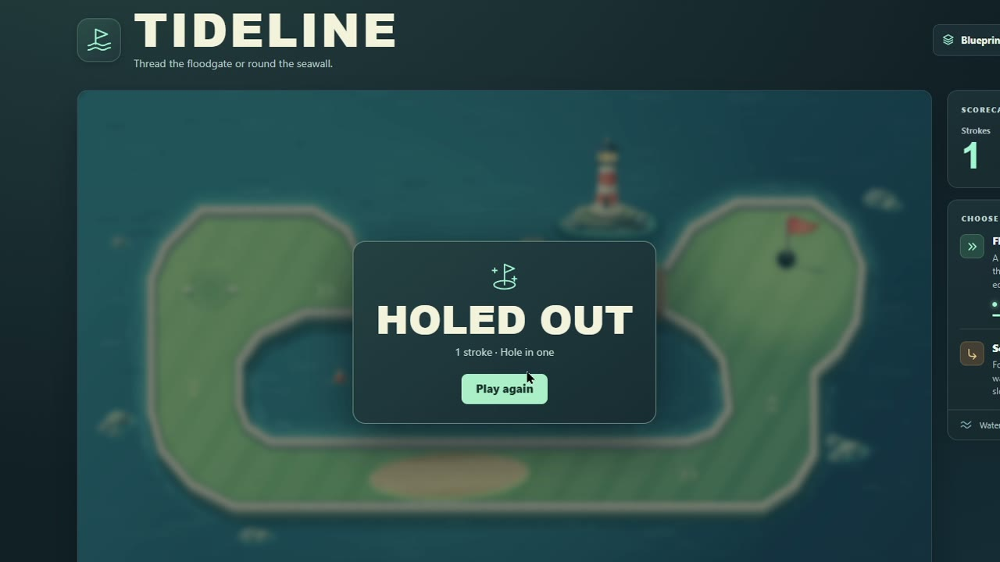
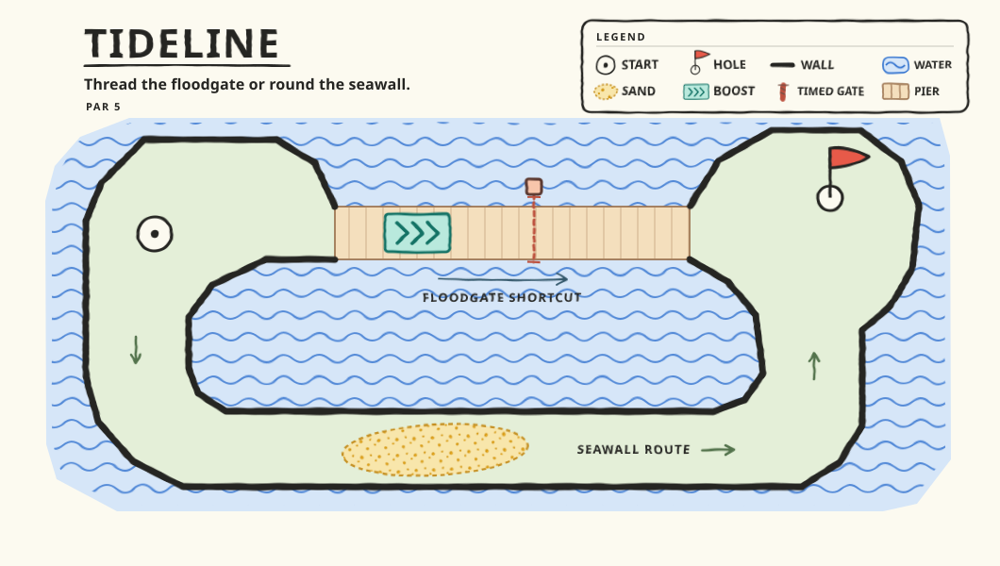

Мини-гольф TidelineTideline mini golf
Своя лунка с чертежом: шлюз по таймеру, разгонная полоса, песок, вода и пирс. Короткий путь через шлюз - за 2 удара, длинный вдоль дамбы - спокойно, пар 5. Поле будто нарисовано акварелью.An original hole with a blueprint: a timed floodgate, a boost lane, sand, water and a pier. The short route through the floodgate takes 2 strokes, the long one along the seawall is the safe way, par 5. The course looks hand-painted in watercolour.


Хоть сейчас выкладывай. Я поймал ворота и забил с одного удара на силе 90. Минус только один: игра без звука.Ready to ship. I caught the gate and holed it in one at power 90. The only miss: the game has no sound.
УправлениеControls
- 01Потяните мяч назад и отпустите: чем дальше, тем сильнее удар.Pull the ball back and release: the further, the harder.
- 02O - наложить чертёж на поле, R - начать заново.O overlays the blueprint, R restarts.
- 03В песке мяч вязнет, закрытый шлюз отбивает мяч, за воду штраф.Sand slows the ball, a closed floodgate bounces it back, water costs a penalty.
Два путиTwo routes
Короткий: дождаться, пока откроется шлюз, и разогнаться по полосе. Я забил с одного удара на силе 90.Short: wait for the floodgate to open and use the boost lane. I holed it in one at power 90.
Длинный: вдоль дамбы и бортиков, через песок. Пар 5.Long: along the seawall and the rails, through the sand. Par 5.
Чертёж и ударBlueprint and the shot

Три референса, которые получила модель:The three reference holes the model got: hole-1 · hole-2 · hole-3


Промпт моделиThe prompt
Русский перевод. Модель получила промпт на английском.
В папке examples три наши нарисованные лунки мини-гольфа: лёгкая, средняя, сложная. В углу каждой легенда символов. Придумай свою лунку, которая круче всех трёх, и сделай из неё игру для браузера.
Сначала нарисуй чертёж my-hole.svg в том же стиле, с легендой. Нужны идея в одной фразе, минимум два новых элемента, которых нет в наших легендах, и выбор: рискованная короткая дорога или длинная безопасная. Каждый символ работает по смыслу.
Мяч бьём мышкой: оттянуть и отпустить. Настоящая физика, счёт ударов, пар, победа, рестарт. Выглядит как игра, а не схема. Клавиша O накладывает чертёж на поле, и он совпадает с игрой.
Представь, что автор трёх лунок должен признать: ты его обошёл.
Итог - index.html рядом с my-hole.svg.
Не задавай вопросов: пройди лунку обоими путями, проверь каждый элемент и сверь поле через O.The examples folder has our three hand-drawn mini-golf holes: easy, medium, hard. Each has a symbol legend in the corner. Invent your own hole that beats all three and turn it into a browser game.
First draw a blueprint, my-hole.svg, in the same style, with a legend. You need an idea in one phrase, at least two new elements that aren't in our legends, and a choice: a risky shortcut or a long safe route. Every symbol does what it means.
The ball is hit with the mouse: pull back and release. Real physics, stroke count, par, win, restart. It looks like a game, not a diagram. The O key overlays the blueprint on the field, and it matches the game.
Imagine the author of the three holes has to admit: you beat them.
The result is index.html next to my-hole.svg.
Don't ask questions: play the hole both ways, check every element and compare the field using O.Скачать промпт (RU)Prompt in Russian · Скачать оригинал (EN)Original prompt (EN) · Исходники на GitHubSource on GitHub
Новые тесты нейросетей, ссылки на игры и опросы - в Telegram-канале.New AI model tests, game links and polls in my Telegram channel.